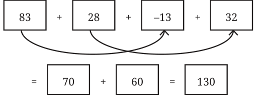
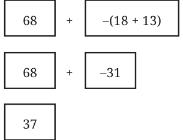
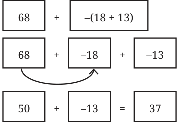

We learnt to write expressions as sums of terms and it became easy for us to read arithmetic expressions. Many times they could have been read in multiple ways and it was confusing. We used swapping (adding two numbers in any order) and grouping (adding numbers by grouping them conveniently) to find easy ways of evaluating expressions. Swapping and grouping terms does not change the value of the expression. We also learnt to use brackets in expressions, including brackets with a negative sign outside. We learnt the distributive property (multiple of a sum is the same as sum of multiples). Let us revise these concepts and find the values of the following expressions:
- 1.\(23 - 10 \times 2 2\). \(83 + 28 - 13 + 32\)
- 3.\(34 - 14 + 20 4\). \(42 + 15 - (8 - 7)\)
- 5.\(68 - (18 + 13) 6\). \(7 \times 4 + 9 \times 6\)
- 7.\(20 + 8 \times (16 - 6)\)
Let us evaluate the first expression, \(23 - 10 \times 2\). First we shall write the terms of the expression. Notice that one of the terms is a number, while the other one has to be converted to a number before adding the two terms.
\(23 - 10 \times 2 = 23 + - 10 \times 2 = 23 + - 20 = 3\)
Let us now evaluate the second one. All the terms of this expression are numbers. If we notice the terms, we find that it will be easier to evaluate if we swap and group the terms.
\(83 + 28 - 13 + 32 =\)

Let us now look at the fifth expression. It has brackets with a negative sign outside. This can be evaluated in two ways - by solving the bracket first (like the solution on the left side) or by removing the brackets appropriately (as on the right side).


\(= =\)
\(= OR =\)
\(= =\)
Now, find the values of the other arithmetic expressions. Algebraic expressions also take number values when the letter- numbers they contain are replaced by numbers. In Example 1, for finding Shabnam’s age when Aftab is 23 years old, we replaced the letter-number a in the expression \(a + 3\) by 23, and it took the value 26.